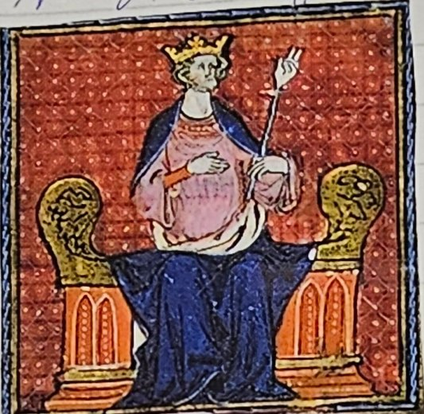
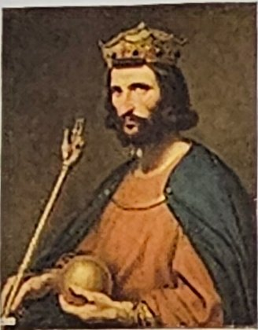
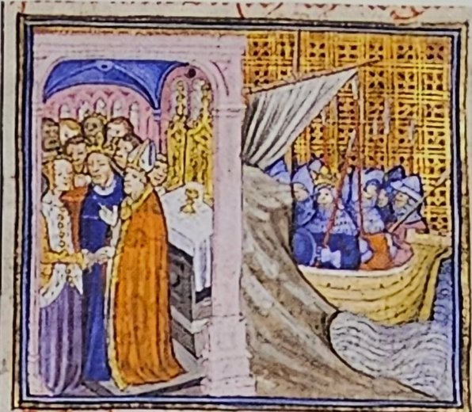

987 – vrcholný středověk
Francie
Francouzské království vzniklo ze západofranské říše. Roku 987 se po vymření Karlovců ujal vlády Hugo Kapet a založil dynastii Kapetovců, ve které se královský trůn dědil.
- 987 Hugo Kapet králem: vznik Francie, začíná vláda Kapetovců
Hugo Kapet a vznik Francie


Francouzské království vzniklo na části území západofranské říše. To je západní díl, který Franská říše dostala při rozdělení roku 843 (téma Franská říše).
V západofranské říši vládli Karlovci, potomci Karla Velikého. Když jejich rod vymřel, ujal se roku 987 vlády vévoda Hugo Kapet. Stal se zakladatelem rodu Kapetovců. Vznikl nový stát, Francie, s centrem v Paříži.
Proč je Hugo Kapet důležitý
Korunovace Huga Kapeta ukončila období volených králů Franské říše. Od té doby dědili trůn králové z dynastie Kapetovců, vždy z otce na syna.
Proč je to důležité: když se král volí, šlechtici se o trůn hádají a po každé smrti krále hrozí boje. Když se trůn dědí, je předem jasné, kdo bude vládnout, a země je klidnější a silnější. Kapetovci vládli Francii velmi dlouho: jejich vláda skončila až francouzskou revolucí, mnoho staletí po Hugovi.
Další Kapetovci
K dalším francouzským králům raného a vrcholného středověku patřili:
- Robert II., syn Huga Kapeta. Dostal se do konfliktu s církví kvůli svým třem manželstvím. Ve středověku určovala pravidla manželství církev, a král se jimi musel řídit stejně jako ostatní.
- Jindřich I. se oženil s Annou Kyjevskou, princeznou z Kyjevské Rusi. Tím spojil svůj rod s východní Evropou. Sňatky byly pro panovníky způsob, jak získat spojence.
- Ludvík VII. se zúčastnil křížové výpravy. To byla výprava křesťanských rytířů do Svaté země, kde žil Ježíš. Jeho první manželkou byla slavná Eleonora Akvitánská (v sešitě Eleanora).

Paměťový obraz
- Kapuce na hlavě krále: Hugo Kapet si nasadí korunu roku 987 v Paříži; koruna se pak dědí z otce na syna.
- Tři nevěsty a zamračený biskup: Robert II. a spor s církví.
- Nevěsta z daleké Rusi: Jindřich I. a Anna Kyjevská.
- Svatba a loď: Ludvík VII. si bere Eleonoru a odplouvá na křížovou výpravu.
Vyzkoušej se
Odpověz nahlas, teprve pak otevři odpověď. Procvičit náhodně
Na jakém území vzniklo Francouzské království?
Na části území západofranské říše.
Kdo se ujal vlády roku 987 a proč?
Vévoda Hugo Kapet, protože vymřeli Karlovci.
Jak se jmenuje rod, který Hugo Kapet založil?
Kapetovci.
Které město bylo centrem Francie?
Paříž.
Co změnila korunovace Huga Kapeta?
Skončilo období volených králů a trůn se začal dědit.
Proč bylo dědění trůnu výhodnější než volba krále?
Bylo jasné, kdo bude vládnout, nehrozily boje o trůn a země byla silnější.
Kdy skončila vláda Kapetovců?
Až francouzskou revolucí.
Proč se Robert II. dostal do sporu s církví?
Kvůli svým třem manželstvím.
S kým se oženil Jindřich I. a co tím získal?
S Annou Kyjevskou; spojil rod s východní Evropou.
Čeho se zúčastnil Ludvík VII.?
Křížové výpravy.
Kdo byla první manželka Ludvíka VII.?
Eleonora Akvitánská.